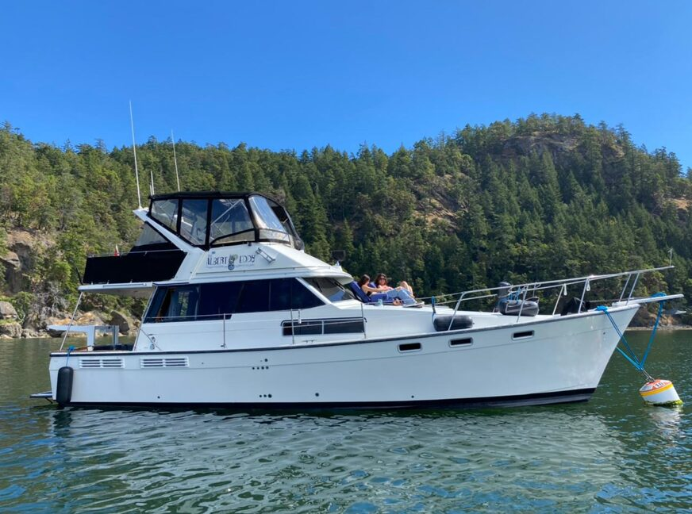

B-Atlas Boat Guide · BAYL-3888-MO
Bayliner 3870 / 3888 Motor Yacht Mid-Cabin Flybridge Motor Yacht
1983–1994
The Bayliner 3888 Motor Yacht is a value-oriented twin-inboard flybridge cruiser built on a low-deadrise modified-V hull. Its distinguishing feature is a two-stateroom, two-head interior with a mid-cabin berth extending beneath the salon and a tub/shower arrangement unusual for this size and era.

- Length
- 38.17 ft
- Beam
- 13.42 ft
- Draft
- 3.17 ft
- Hull behaviour
- Semi-Displacement
- Fuel
- Diesel
- Propulsion
- Shaft
- Engine configuration
- Twin Inboard
- Boat family
- Motor Yacht
- Construction
- Fiberglass
Best for
- Couples or families wanting substantial accommodation at moderate purchase cost
- Extended inland and protected coastal cruising
- Owners comfortable maintaining an older twin-diesel motor yacht
Trade-offs
- Low-deadrise hull is optimized more for efficiency than rough-water softness
- Two engines and multiple systems increase maintenance burden
- Age makes tanks, wiring, hoses and interior leaks important survey items
- Model was sold under earlier 3870/3780-related designations
Known concerns
- No model-specific concern has been promoted to B-Atlas’s evidence threshold. This does not mean the model has no age-, condition- or hull-specific risks.
Inspection focus
- Both diesels, transmissions, shafts and cooling systems
- Fuel and water tanks and associated plumbing
- Window/deck leaks and interior moisture
- Electrical and sanitation systems
Continue researching
Related boat models
Bayliner 3788 Motor Yacht Two-Generation Flybridge Motor Yacht
39.33 ft · Planing
Bayliner 4087 Cockpit Motor Yacht Cockpit Motor Yacht
41.42 ft · Planing
Bayliner 3388 Motor Yacht Flybridge Motor Yacht
32.92 ft · Semi-Displacement
Bayliner 3270 / 3288 Motor Yacht Explorer / Motor Yacht
32.08 ft · Semi-Displacement
Bayliner 3258 Command Bridge Command Bridge Cruiser
32.92 ft · Planing
Bayliner 3218 Motoryacht Flybridge Motor Yacht
32.67 ft · Semi-Displacement
About this record
B-Atlas preserves uncertainty: missing information remains unknown rather than being treated as a negative. Specifications and guidance describe the model record; individual boats can differ by year, equipment, refit and condition.